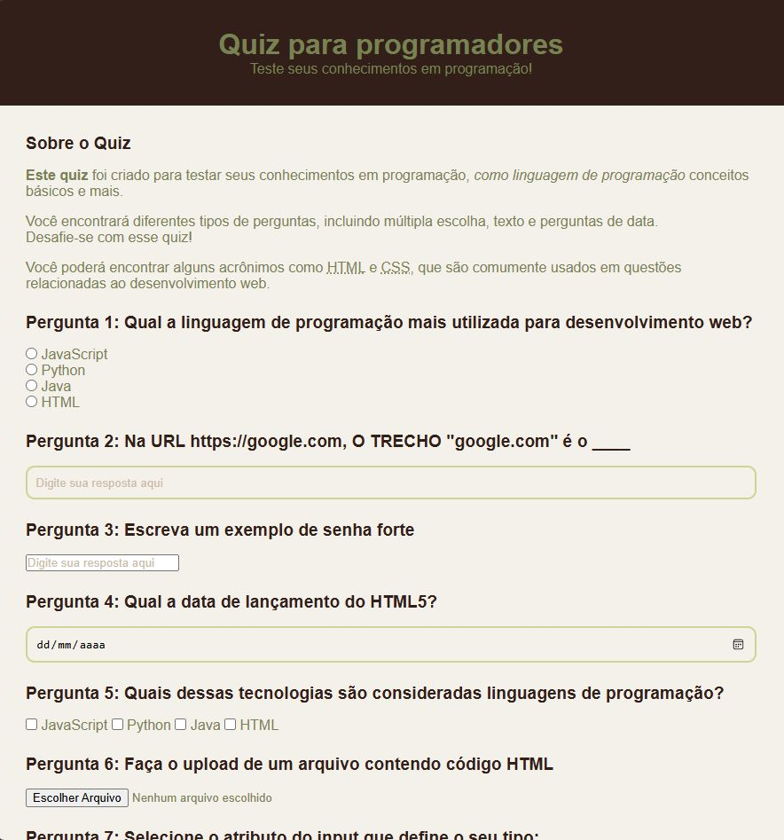

Matheus Galdino
Junior Software Developer
I identify the problem, investigate its cause, and work on a solution through code.
Junior Software Developer
I identify the problem, investigate its cause, and work on a solution through code.
function login(user) { if (user = null) { return "error"; }}Identify: the login fails for every user.
I started out in technical support, working with computer maintenance, customer support and network monitoring. These experiences taught me to investigate what is causing a problem before jumping into a fix.

A form with multiple-choice, text, date and file-upload questions, created to test basic programming knowledge.

A coffee shop website featuring recipes, news and highly rated drinks, with a dark and responsive layout.

A barbershop management dashboard with product control, movement history and a team area for professionals.
A local, open-source language model with a browser-based interface. The idea is to work with TXT and Markdown files, support online and offline use, and keep data stored locally. This is a learning project that I plan to improve over time.
Summarize my study file
Sure! I read your Markdown file and organized the main points.
Ask Galddino.IA something...
Let's talk.